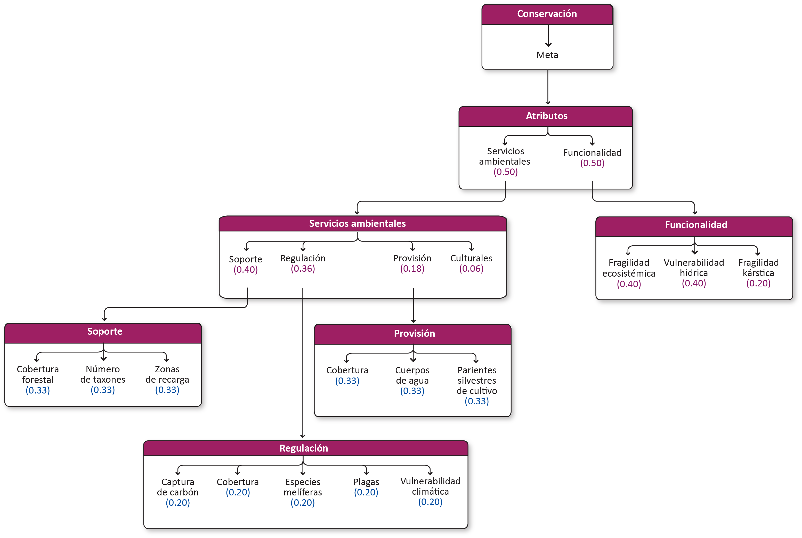

Conservación-En proceso de actualización¶
Meta¶
Promover la conservación, la protección y el aprovechamiento sustentable de los elementos biofísicos y bioculturales; la preservación de sitios prioritarios y la restauración de sitios degradados; para garantizar la funcionalidad y conectividad de los ecosistemas y la provisión de servicios ambientales, respetando los usos y costumbres de las comunidades indígenas mediante el fomento de mejores prácticas y la participación de comunidades locales.
1.1 Modelo de decisión¶

1.2 Atributos¶
1.2.1 Servicios ambientales¶
Beneficios que la gente recibe de los diferentes ecosistemas, ya sea de manera natural o por medio de su manejo sustentable, ya sea en el ámbito local, regional o global. Los servicios ambientales influyen directamente en el mantenimiento de la vida, generando beneficios y bienestar para las personas y las comunidades.
| Atributos | Definición |
|---|---|
| Soporte | Procesos ecológicos necesarios para los otros tres tipos de servicios ambientales. Su impacto sobre el ser humano es indirecto (o directo a muy largo plazo). Comprenden: formación de suelo, fotosíntesis, producción primaria, ciclo de nutrientes y ciclo del agua. |
| Regulación | Procesos ecológicos que mejoran o hacen posible nuestra vida, tales como: mejoras en la calidad del aire, regulación del clima, del ciclo del agua, control de la erosión, mantenimiento de la fertilidad del suelo, reciclado de desechos y purificación de aguas residuales, control de enfermedades y plagas, polinización y reducción de daños ante catástrofes naturales. |
| Provisión | Productos obtenidos de la naturaleza para su consumo o utilización, ya sea de manera directa o previo procesamiento, tales como: comida, agua dulce de consumo y uso agrícola; materias primas bióticas para tejidos, materiales de construcción, resinas; materiales geóticos (sal); combustibles renovables; recursos genéticos para agricultura, ganadería y biotecnología; recursos ornamentales, decoración, jardinería, etc; compuestos bioquímicos de distintos usos, recursos farmacológicos y medicinales, etc. |
| Culturales | Valores o beneficios no materiales que se obtienen de la naturaleza a través del enriquecimiento personal o espiritual, el desarrollo cognitivo, la reflexión, el disfrute de la naturaleza, los placeres estéticos que ofrecen los propios ecosistemas. La diversidad de los ecosistemas es uno de los factores determinantes en la diversidad cultural de un territorio. Muchos ecosistemas son una fuente de inspiración para el arte, el folklore, los símbolos nacionales y regionales, la arquitectura y la publicidad. |
1.2.1.1 Soporte¶
Procesos ecológicos necesarios para los otros tres tipos de servicios ambientales. Su impacto sobre el ser humano es indirecto (o directo a muy largo plazo). Comprenden: formación de suelo, fotosíntesis, producción primaria, ciclo de nutrientes y ciclo del agua.
| Atributos | Definición |
|---|---|
| Cobertura forestal | Tipo de cobertura forestal como indicador de productivida primaria. |
| Riqueza forestal | Número de taxones como indicador de productivida primaria. |
| Zonas de recarga | Zonas de recarga de acuífero. |
1.2.1.2 Regulación¶
Procesos ecológicos que mejoran o hacen posible nuestra vida, tales como: mejoras en la calidad del aire, regulación del clima, del ciclo del agua, control de la erosión, mantenimiento de la fertilidad del suelo, reciclado de desechos y purificación de aguas residuales, control de enfermedades y plagas, polinización y reducción de daños ante catástrofes naturales.
| Atributos | Definición |
|---|---|
| Captura de Carbón | Captura de Carbón como indicador de calidad del aire. |
| Cobertura | Tipo de cobertura como indicador de productivida primaria. |
| Especies melíferas | Especies mielíferas como indicador del servicio ambiental de regulacion de polinización. |
| Distribución de plagas | Incidencia de plagas, como indicador del servicio de regulacion de control de enfermedades y plagas. |
| Vulnerabilidad climática | Vulnerabilidad climática como medida del servicio ambiental de regulación del clima. |
1.2.1.3 Provisión¶
Productos obtenidos de la naturaleza para su consumo o utilización, ya sea de manera directa o previo procesamiento, tales como: comida, agua dulce de consumo y uso agrícola; materias primas bióticas para tejidos, materiales de construcción, resinas; materiales geóticos (sal); combustibles renovables; recursos genéticos para agricultura, ganadería y biotecnología; recursos ornamentales, decoración, jardinería, etc; compuestos bioquímicos de distintos usos, recursos farmacológicos y medicinales, etc.
| Atributos | Definición |
|---|---|
| Cobertura | Vegetación con posible uso o consumo, ya sea directamente o con previo procesamiento. |
| Cuerpos de agua | Distancia a cenotes y lagunas costera. |
| Parientes silvestres de cultivo | Recursos genéticos. |
1.2.2 Funcionalidad ecosistémica¶
Procesos biológicos, geoquímicos y físicos que tienen lugar en un ecosistema y producen un servicio.
| Atributos | Definición |
|---|---|
| Fragilidad ecosistémica | Estado de conservación y salud de los ecosistemas y su capacidad de resiliencia. |
| Vulnerabilidad hídrica | Vulnerabilidad del recurso hídríco ante agentes externos como contaminación, intrusión salina, sobreexplotación. |
| Fragilidad kárstica | Vulnerabilidad del suelo de ser afectado por alguna actividad del hombre o por sus efectos, como la erosión. Vulnerabilidad de los ecosistemas kársticos derivada de su nivel de desarrollo y fragilidad ante impactos externos. |
1.2.2.1 Fragilidad ecosistémica¶
Estado de conservación y salud de los ecosistemas y su capacidad de resiliencia.
1.2.2.2 Vulnerabilidad hídrica¶
Vulnerabilidad del recurso hídríco ante agentes externos como contaminación, intrusión salina, sobreexplotación.
1.2.2.2 Fragilidad kárstica¶
Vulnerabilidad del suelo de ser afectado por alguna actividad del hombre o por sus efectos, como la erosión. Vulnerabilidad de los ecosistemas kársticos derivada de su nivel de desarrollo y fragilidad ante impactos externos.